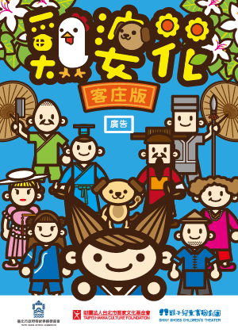

《鸡婆花》
剧情简介
《鸡婆花》是一部以客语教学为核心目标的客家教育音乐剧，由鞋子儿童实验剧团创作演出。该剧通过生动有趣的舞台表演，巧妙融入客家文化元素与日常语言词汇，旨在让儿童观众在观剧过程中自然学习客语，实现寓教于乐的效果。
剧情描述了客家庄有个 “快乐村”，村民们乐于助人，但热心过头，造成彼此的困扰。于是县太爷下令 “没升旗，就不准帮别人的忙”，大家连打个招呼都不敢，从此再也听不到快乐的笑声。某天下午小兰在回家的路上，看着没人敢整理的花园，心里很难过，随手将从山上摘来的小花种在花园里。于是，奇妙的事情发生了⋯⋯。
该剧是一出古装喜剧，发生在客家庄里的 "快乐村"，透过客家人好客、“一庄有难，大家帮忙”这样的客家精神来传递故事的宗旨。在这科技冷漠的时代，社会需要更多的热心助人与互相帮忙！本剧用幽默风趣、寓教于乐的表现手法，让亲子们感受过去质朴的“人情味”，学习到助人的快乐！但同时也告诉孩子们 "适时适当" 的协助，而不是热心过头，反而会变成多管闲事、造成别人的困扰，这样就会太过于“鸡婆”了！